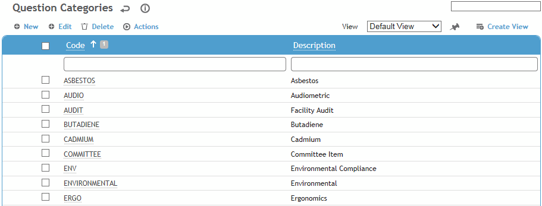

To set up questions and questionnaires, you first set up categories in the QuestionCategory look-up table, then create individual questions in the SingleQuestion look-up table, then use the Questionnaire look-up table to create a questionnaire by assigning, editing, or removing questions.
Question categories allow you to filter questions when creating questionnaires, for example: Medical, Safety, Ergonomics, Case Management, IH, Lead, Audiometric, Pulmonary, etc. Make a generic category, such as General or All Types, for questions that could apply to more than one questionnaire, such as personnel-related questions (Name, DOB, SSN/SIN, etc.) or asset-related questions (Serial Number, Location, Media Type, etc.).
To filter the list of records, enter a few characters in one or more of the fields at the top followed by an asterisk, then press Enter.

Click a link to edit, or click New.
Enter a Code and Description for the category.
Click Save.